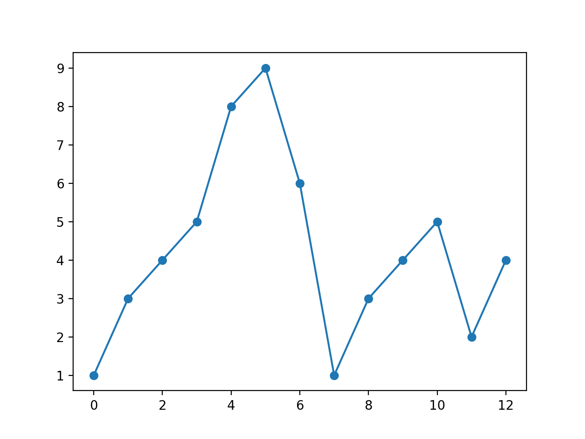
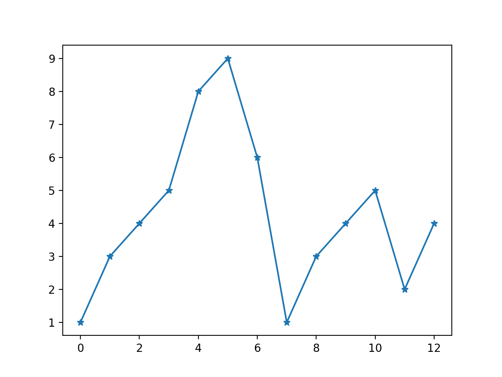
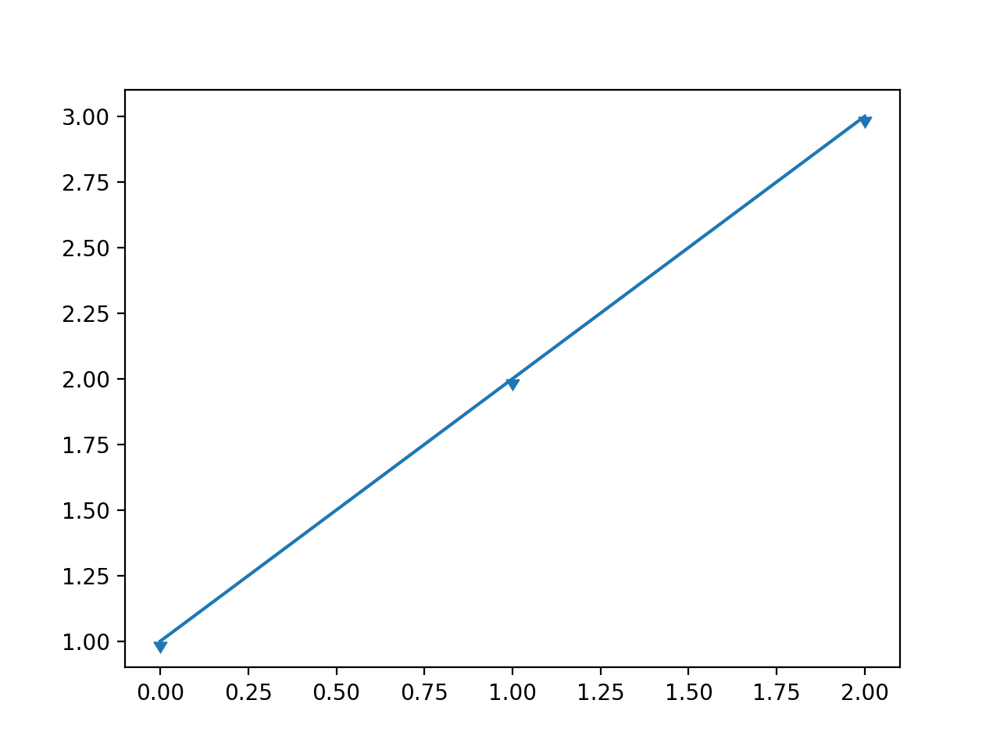
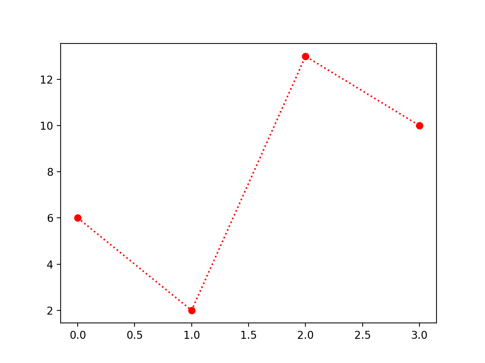
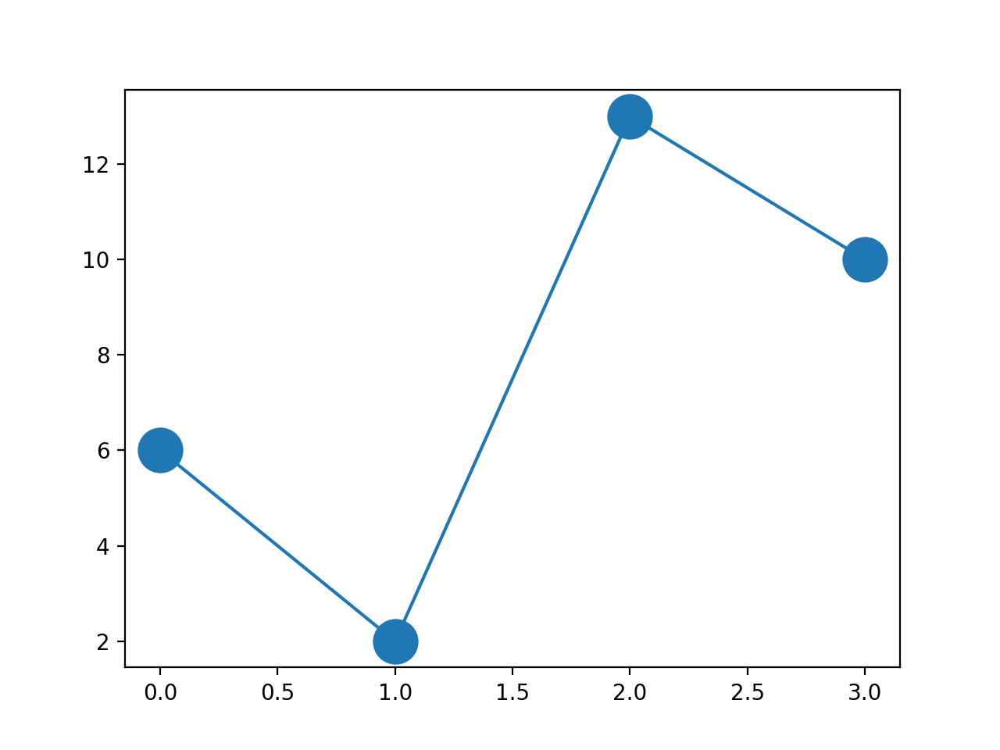
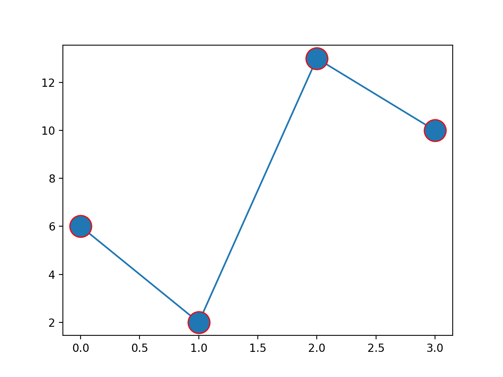
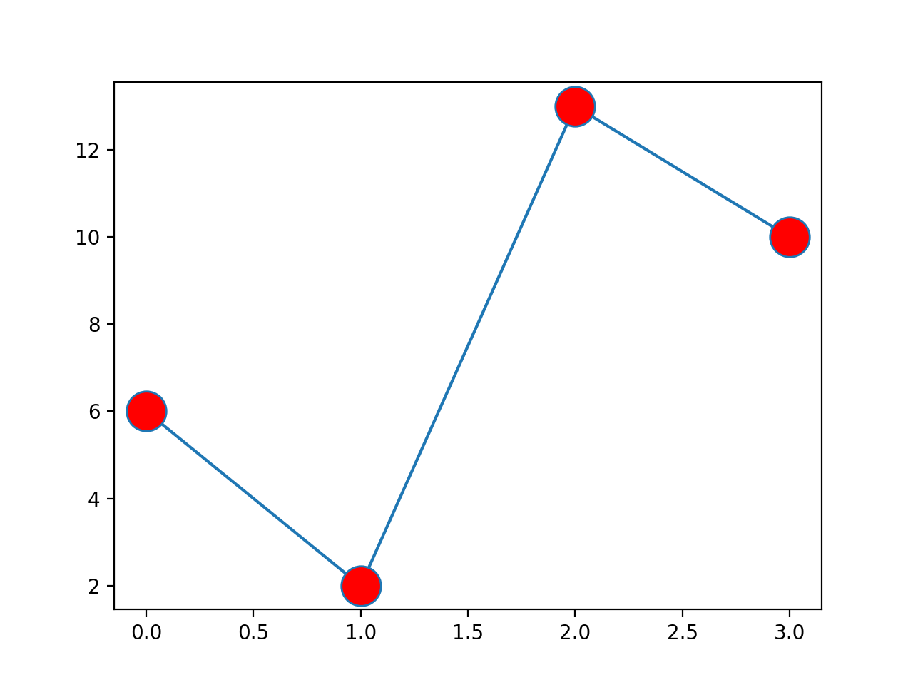
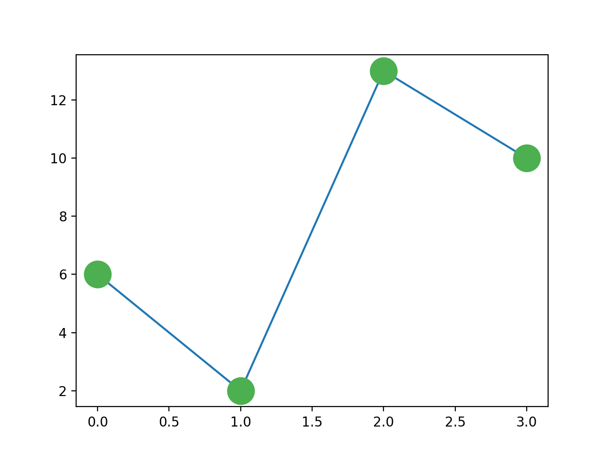

4. Matplotlib 绘图标记原文↗
绘图过程如果我们想要给坐标自定义一些不一样的标记，就可以使用 plot() 方法的 marker 参数来定义。
以下实例定义了实心圆标记：
实例
import matplotlib.pyplot as pltimport numpy as np
ypoints = np.array([1,3,4,5,8,9,6,1,3,4,5,2,4])
plt.plot(ypoints, marker = 'o')
plt.show()
显示结果如下：

marker 可以定义的符号如下：
| 标记 | 符号 | 描述 |
|---|---|---|
| "." |  |
点 |
| "," |  |
像素点 |
| "o" |  |
实心圆 |
| "v" | 下三角 | |
| "^" | 上三角 | |
| "<" |  |
左三角 |
| ">" |  |
右三角 |
| "1" |  |
下三叉 |
| "2" |  |
上三叉 |
| "3" |  |
左三叉 |
| "4" |  |
右三叉 |
| "8" |  |
八角形 |
| "s" |  |
正方形 |
| "p" | 五边形 | |
| "P" |  |
加号（填充） |
| "*" | 星号 | |
| "h" | 六边形 1 | |
| "H" | 六边形 2 | |
| "+" |  |
加号 |
| "x" |  |
乘号 x |
| "X" |  |
乘号 x (填充) |
| "D" |  |
菱形 |
| "d" | 瘦菱形 | |
| "|" |  |
竖线 |
| "_" |  |
横线 |
| 0 (TICKLEFT) |  |
左横线 |
| 1 (TICKRIGHT) |  |
右横线 |
| 2 (TICKUP) |  |
上竖线 |
| 3 (TICKDOWN) |  |
下竖线 |
| 4 (CARETLEFT) |  |
左箭头 |
| 5 (CARETRIGHT) |  |
右箭头 |
| 6 (CARETUP) | 上箭头 | |
| 7 (CARETDOWN) | 下箭头 | |
| 8 (CARETLEFTBASE) |  |
左箭头 (中间点为基准) |
| 9 (CARETRIGHTBASE) |  |
右箭头 (中间点为基准) |
| 10 (CARETUPBASE) | 上箭头 (中间点为基准) | |
| 11 (CARETDOWNBASE) | 下箭头 (中间点为基准) | |
| "None", " " or "" | 没有任何标记 | |
| '$...$' | 渲染指定的字符。例如 "$f$" 以字母 f 为标记。 |
以下实例定义了 * 标记：
实例
import matplotlib.pyplot as pltimport numpy as np
ypoints = np.array([1,3,4,5,8,9,6,1,3,4,5,2,4])
plt.plot(ypoints, marker = '*')
plt.show()
显示结果如下：

以下实例定义了下箭头：
实例
import matplotlib.pyplot as pltimport matplotlib.markers
plt.plot([1, 2, 3], marker=matplotlib.markers.CARETDOWNBASE)
plt.show()
显示结果如下：

fmt 参数
fmt 参数定义了基本格式，如标记、线条样式和颜色。
fmt = '[marker][line][color]'
例如 o:r，o 表示实心圆标记，: 表示虚线，r 表示颜色为红色。
实例
import matplotlib.pyplot as pltimport numpy as np
ypoints = np.array([6, 2, 13, 10])
plt.plot(ypoints, 'o:r')
plt.show()
显示结果如下：

线类型：
| 线类型标记 | 描述 | |
|---|---|---|
| '-' | 实线 | |
| ':' | 虚线 | |
| '--' | 破折线 | |
| '-.' | 点划线 | |
颜色类型：
| 颜色标记 | 描述 | |
|---|---|---|
| 'r' | 红色 | |
| 'g' | 绿色 | |
| 'b' | 蓝色 | |
| 'c' | 青色 | |
| 'm' | 品红 | |
| 'y' | 黄色 | |
| 'k' | 黑色 | |
| 'w' | 白色 | |
标记大小与颜色
我们可以自定义标记的大小与颜色，使用的参数分别是：- markersize，简写为 ms：定义标记的大小。
- markerfacecolor，简写为 mfc：定义标记内部的颜色。
- markeredgecolor，简写为 mec：定义标记边框的颜色。
设置标记大小：
实例
import matplotlib.pyplot as pltimport numpy as np
ypoints = np.array([6, 2, 13, 10])
plt.plot(ypoints, marker = 'o', ms = 20)
plt.show()
显示结果如下：

设置标记外边框颜色：
实例
import matplotlib.pyplot as pltimport numpy as np
ypoints = np.array([6, 2, 13, 10])
plt.plot(ypoints, marker = 'o', ms = 20, mec = 'r')
plt.show()
显示结果如下：

设置标记内部颜色：
实例
import matplotlib.pyplot as pltimport numpy as np
ypoints = np.array([6, 2, 13, 10])
plt.plot(ypoints, marker = 'o', ms = 20, mfc = 'r')
plt.show()
显示结果如下：

自定义标记内部与边框的颜色：
实例
import matplotlib.pyplot as pltimport numpy as np
ypoints = np.array([6, 2, 13, 10])
plt.plot(ypoints, marker = 'o', ms = 20, mec = '#4CAF50', mfc = '#4CAF50')
plt.show()
显示结果如下：
